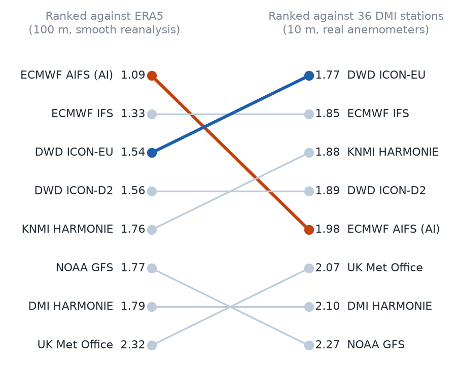
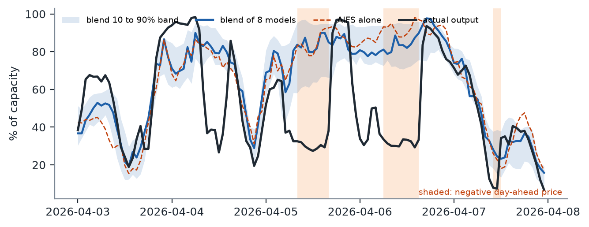
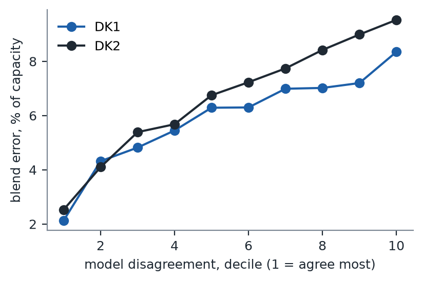

Blending eight public weather models forecasts Danish wind power better than any one of them, and better than the grid operator's own day-ahead forecast. Which single model is best depends on what you count as the truth. And the worst forecast day of 2026 was not a weather failure at all.
A low pressure system crossed the North Sea and pushed winds above 20 m/s at hub height over western Denmark. The map shows the wind at 100 m, the height of a turbine hub, hour by hour. Switch between what happened and what each model forecast the day before.
"What happened" is ERA5, ECMWF's reconstruction of past weather. The forecasts are the runs issued one day earlier, as a trader would have seen them. Grid spacing is 0.5 degrees. AIFS has no archive before February 2025, so it is greyed out for January 2025.
The particle map shows one field at a time. The four maps below take the Easter storm apart: where the low went, how strong its winds were at their peak, where each day-ahead forecast was wrong, and when the strongest wind reached each part of Denmark. Every map can be switched to the January 2025 storm.
The day-ahead forecasts put the low in nearly the right place.
Track of the low pressure centre, taken as the minimum of sea level pressure on a 1.5 degree grid and refined between grid points, for ERA5 and for each forecast issued the day before. Dots mark every six hours; the large dots mark the hour on the slider. Grey lines are ERA5 isobars at that hour, every 4 hPa. The dashed box is the area of the other storm maps.
AIFS came closest on average, but cut the strongest winds out of the storm.
Storm footprint: the strongest 100 m wind at each grid point over the three days of the storm. The top left panel is ERA5; the others are the forecasts issued one day earlier. The number in each panel is the area where the strongest wind reached 27 m/s, in thousands of square kilometres.
Every forecast was too weak in the core of the storm, and each was wrong in its own place.
Forecast minus ERA5 wind speed at 100 m, hour by hour, for the run issued the day before. Blue: the forecast was too weak; red: too strong. The dashed line encloses the area where ERA5 wind exceeded 20 m/s, the core of the storm. Grey lines are ERA5 isobars, every 4 hPa.
The strongest wind crossed Denmark from west to east in about ten hours.
Hovmöller diagram: 100 m wind speed averaged over the latitudes of Denmark (54.5 to 57.5 N), by longitude (across) and hour (down). A storm moving east draws a band sloping down to the right. The black line marks the hour of the strongest wind at each longitude in ERA5; the coloured line marks the same in the forecast.
Every model was scored on day-ahead wind from March 2025 to October 2026, in two ways. Against ERA5 at 100 m, ECMWF's AI model AIFS wins clearly. Against real anemometers at 36 DMI stations, it drops to fifth and DWD's ICON-EU comes first.
The reason is smoothing. ERA5 is a smooth field, and AIFS was trained on it, so AIFS is rewarded for being smooth. Real anemometers see gusts and local effects that a smooth forecast misses. A desk that scores models only against reanalysis will pick the wrong one.

The best model changes with the place. Hover over a station to see which model forecast it best.
The blend's wind errors are largest where land meets sea, on islands and coastal points.
Day-ahead 100 m wind error at the 34 forecast sites against ERA5, March 2025 to October 2026. Circle size is the root mean square error; colour is the mean bias, red where the forecast is too strong and blue where it is too weak. Click a site to see the blend's bias by the direction the wind blows from (ERA5 at 100 m); petal length is the size of the bias and the faint fan shows how often the wind comes from each direction.
Each model's winds at 34 wind-farm sites were turned into a power forecast with a gradient-boosted mapping, trained on 2025 and tested on 2026. The blend is the plain average of the eight forecasts. It beats every model on its own, and Energinet's own day-ahead forecast, in both price areas.
| Forecast, test Jan to Oct 2026 | DK1 error | DK2 error |
|---|
Error is mean absolute error as a percentage of installed capacity. Energinet's forecast is rescaled on 2025 so that it is judged fairly. Its DK1 offshore series is capped near 1,000 MW while the fleet peaks near 2,000 MW, so DK2 is the cleaner comparison.
The blend's worst days were 5 and 6 April 2026, Easter Sunday and Monday. The forecast had the wind right. But demand was low on the holiday, the day-ahead price went negative, and wind farms were switched off. DK2 output fell to about 30% of capacity in the middle of a gale.

Across all gale hours in 2026, the blend over-forecast DK2 by about half of capacity when the price was negative. When the price was positive, it was close to unbiased. Adding gusts, wind shear and a cut-out flag barely changed the gale error, so the misses are about the market, not turbines shutting down in high wind.
A trader needs the range, not just the middle. Three methods from the forecasting literature turn the eight models into a probability distribution for 100 m wind: EMOS, a classic statistical correction, and two neural networks, DRN (Rasp and Lerch, 2018) and Bernstein quantile networks (Bremnes, 2020). All three beat the best single model by a wide margin.
| Method, test 2026 | CRPS, m/s |
|---|
For power, the first band was too confident: only half the outcomes landed inside its 10 to 90% range. A conformal correction (Romano and others, 2019) fixed it, and the band then caught 86% in DK1 and 83% in DK2, close to the 80% target.

Limits. The test covers ten months of 2026, with one train and test split and only three strong storms, so rankings a few tenths apart are ties. ERA5 flatters smooth models, which is why every model is also scored against stations. Installed capacity is estimated from each area's 60-day peak output, because Thor was coming online during the test.
Forecasts are Open-Meteo's archive of each model's runs as issued one day earlier: ECMWF IFS and AIFS, DWD ICON-EU and ICON-D2, NOAA GFS, the UK Met Office, DMI HARMONIE and KNMI HARMONIE. Truth is ERA5 and DMI's open station observations. Production and prices come from Energinet's Energi Data Service. Neural models were trained on a GTX 1060. A live version of the forecast is issued every day before the 12:00 day-ahead auction and scored afterwards: see the daily league table.